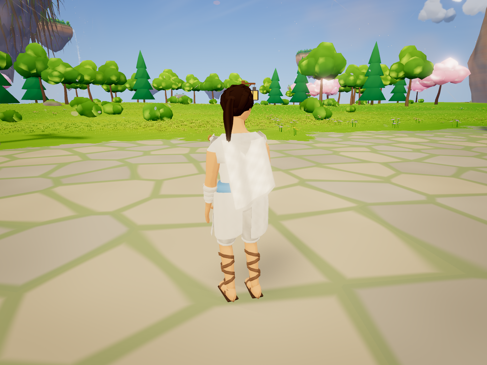
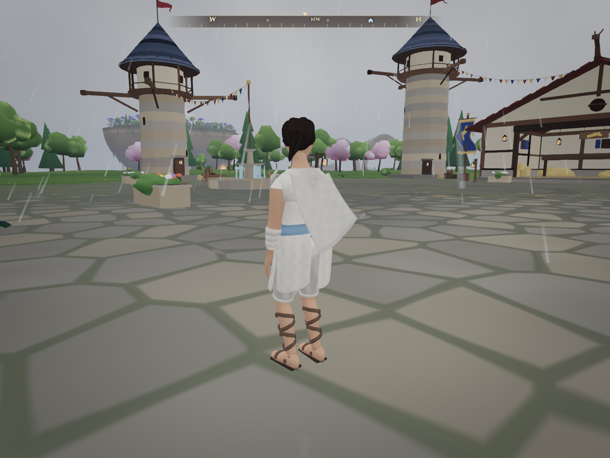
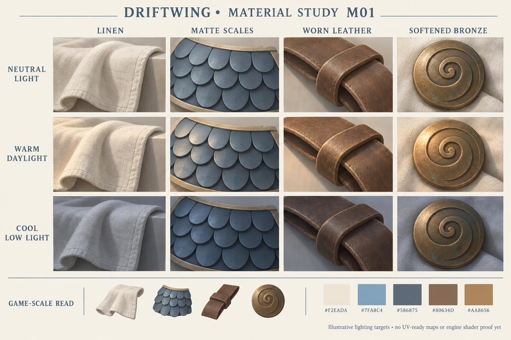

C02 / M01 · cloth + HD proofCloth that moves and settles.
Loose drape, sash and ponytail react to relative wind, acceleration and body/mount contact. C02 contact no longer turns a positional correction into a bounce. Quality changes preserve cloth motion. Fitted chiton/trousers and Aerie tie-downs remain rig-driven.
Low 1K · Medium 2K · High 3K by default · optional 4K High comparison. Both 3K and 4K compiled and rendered. 3K saves about 44% map memory; the visual difference here is small. Four padded tiles share one dye-neutral atlas, derived from the approved M01 material study.
1161 unit tests; typecheck/build; smoke 15/15; 117 production-browser checks and 69 captures. Zero browser errors. Software SwiftShader establishes integration/appearance, not integrated-GPU performance.
Rider + dragon budgets and exact limitations · Full action/save/Windline proof · All mounted sides and tread details · Verification · Source hashes · Previous five-pass model review
Wind response
Controlled actual-engine pose stress: calm → 8 m/s breeze → left/right gusts → ten seconds calm. The final maximum particle speed was 1.06 cm/s. Separate 900-frame stress used wind reversals up to 90 m/s, frame inertia and 4–250 ms frame intervals; all particles and rendered positions stayed finite and bounded. This is not exhaustive accessory clearance.

Calm · same fixed camera3K and 4K at High
Identical camera, lighting, animation time and optional normal-map mode. These dimensions describe the combined atlas. Usable material tiles are 1440 px at 3K and 1920 px at 4K.
High · 3072² atlas · 48 MiB per mipmapped RGBA8 mapHigh comparison · 4096² atlas · 85.33 MiB per map Low and Medium
Mounted fit preserved
Same approved compact costume, saddle correction, sockets and foot contacts. These latest Medium captures use 2K; the linked full mounted matrix checks ground, glide, both banks, dive and brake from both sides.
Actual environment and material source

Actual player and rainy weather · world wind minus rider velocity
Approved M01 material study · illustration, not a supplied UV texture packWalkable-surface contact uses existing shared ground/deck queries and has a sloped-ground regression. Arbitrary wall/foliage contact and cloth self-collision are not implemented. Current dragon hide/membrane detail is shader-generated; the texture policy documents future bitmap budgets without claiming a dragon map upgrade.